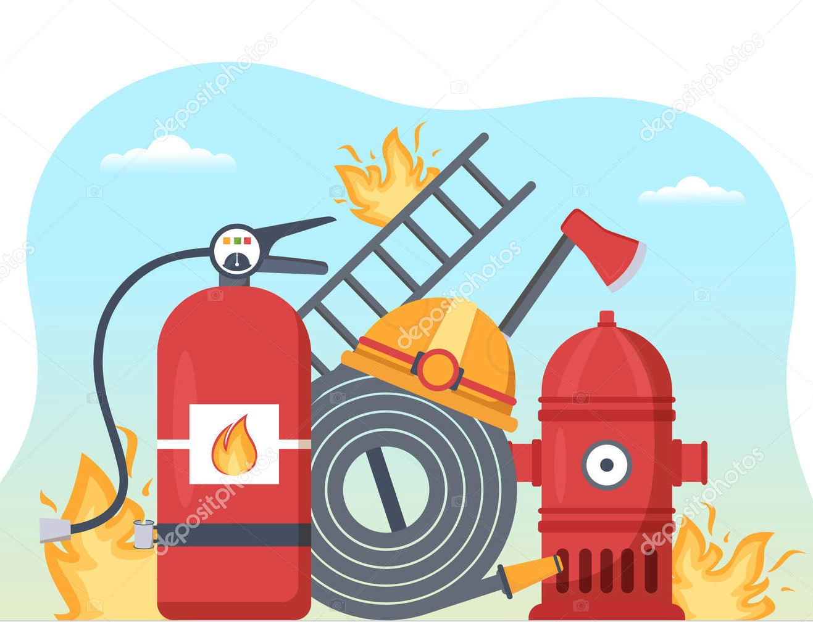
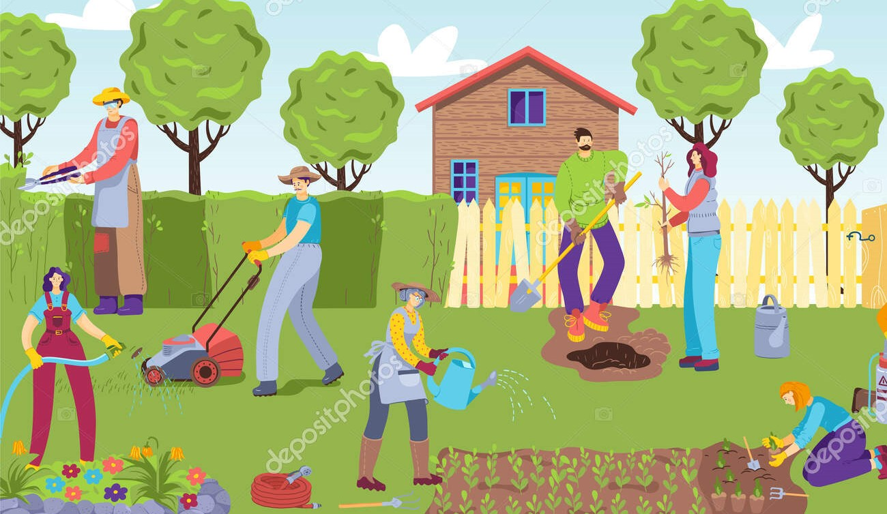

DIPLOMA COURSES
OTHER DIPLOMA COURSES
Foreign Languages
Specialized diploma in foreign languages imparts comprehensive language skills and cultural knowledge, enabling effective communication and diverse career opportunities enabling them to pursue various career opportunities in the international arena. In-demand for teaching roles in MNCs, Banks, and Embassies. Courses offered at various levels, minimum 45% marks in 10+2 required. .Several foreign language courses at certificate, diploma, UG, and PG levels are available. The admissions are based on university-level entrance exams that are based on the English language and the history of foreign languages.
Fire Safety
A diploma course in fire safety is a specialized program focusing on comprehensive knowledge and skills related to fire prevention, firefighting, and fire safety management. The diploma typically spans 1 to 2 years, with variations based on college rules and curriculum. To pursue this course, candidates require a qualifying certificate from the 12th-grade examination. The program equips students to become competent professionals in the field of fire and safety management, emphasizing the importance of ensuring public safety and protecting assets from fire hazards.
Journalism
A journalism diploma course is a specialized program offering comprehensive training in the media field. It equips aspiring journalists with essential skills in news reporting, writing, editing, and multimedia storytelling. Ethics in journalism is also emphasized. The course typically spans 1 to 3 years, allowing students to explore journalism without pursuing a degree. Eligibility requires completion of 10+2 or higher, and admission processes may involve entrance exams or personal interviews, varying among institutes. Some colleges offer direct admission based on class 12 board scores. This diploma course serves as a stepping stone for those passionate about pursuing a career in journalism, providing valuable expertise and knowledge for success in the dynamic media industry.
Home Science
A diploma course in Home Science focuses on home management, family welfare, nutrition, and child development. It equips students with practical skills in household activities, health, and family dynamics to improve well-being. Eligibility requires a minimum of 45% in 10+2 from a Recognized Educational Board. Students can opt for this course after their 12th-degree in science through UGC-approved boards, with fees varying among universities. It empowers individuals to efficiently manage their homes and enhance family life. The program's comprehensive approach makes it a rewarding educational choice for those seeking to create a harmonious and nurturing environment within their households.
Tourism and Travel Management
Diploma in Tourism & Travel Management is an entry-level diploma course that involves the analysis and study of the tourism industry. The course comprises chiefly history, fundamentals, aviation management, business statistics, and business regulatory framework of tourism.The course is offered to students who have passed their 10+2 or equivalent level education from a recognized board/institute. Students who have done a diploma after class 10th as a 10+3 pattern of education also can apply for admission to the course.The admission into Diploma in Tourism and Travel management courses is either based on a merit list or entrance exams.
Rural Development
A diploma course in rural development is a specialized educational program that focuses on understanding and addressing the unique challenges faced by rural areas and communities. The course aims to equip students with the knowledge and skills to promote sustainable development, improve living conditions, and enhance the overall well-being of rural populations.Aspiring candidates should have an intermediate (10+2) exam from a recognized school board or its equivalent.They should also be friendly by nature, having liberal thinking and could be able to work for the development of all communities.
